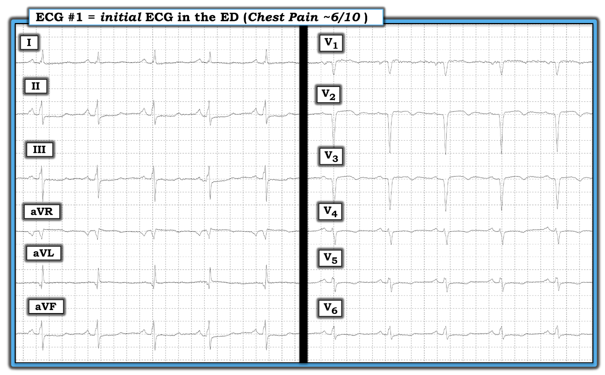
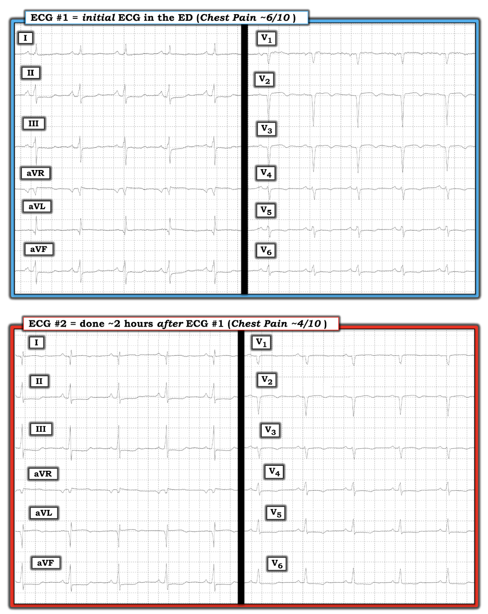
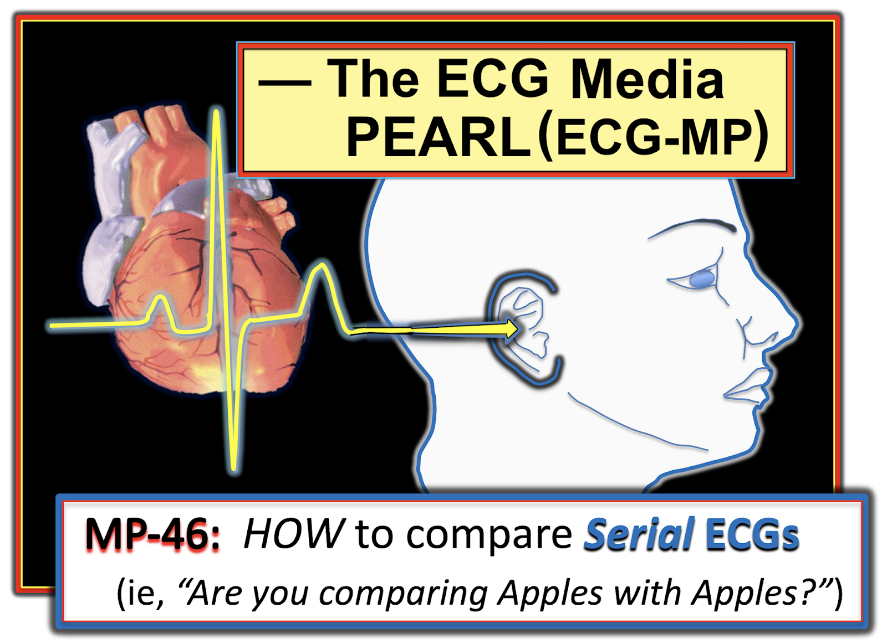
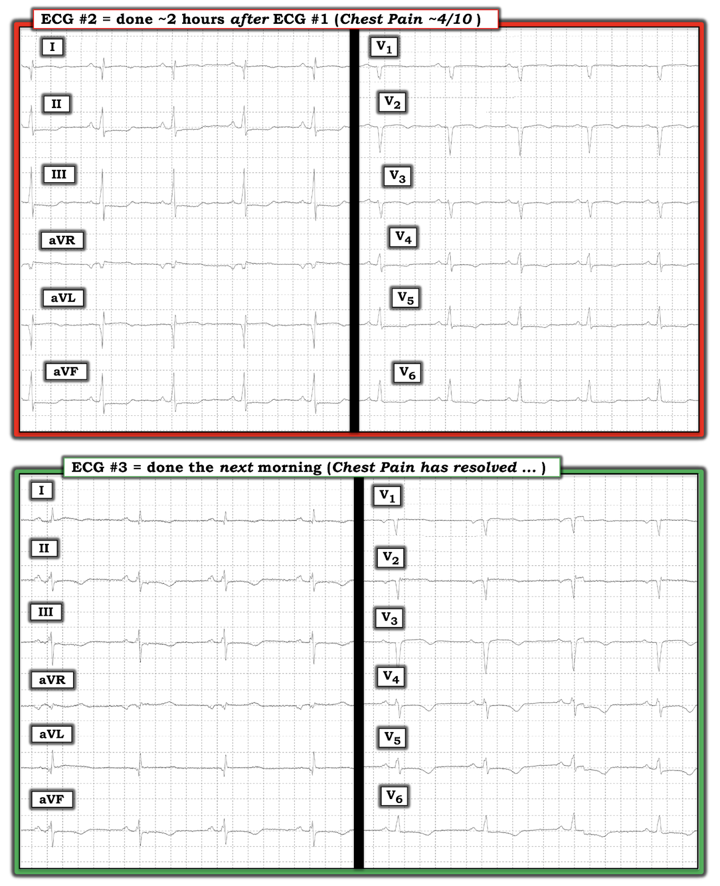

ECG Blog #230 — Có thay đổi điện tâm đồ liên tiếp không?
===================================
LƯU Ý: Việc đọc các bản ghi trong ca hôm nay có nhiều điểm tinh tế. Nhưng tôi thấy đây là một ca rất tốt để giảng dạy — vì nó mang lại nhiều hiểu biết về việc ra quyết định lâm sàng trong thực tế khi câu trả lời không hiển nhiên. BẠN có sẵn sàng nhận thử thách không? Ý kiến của BẠN luôn được chào đón nếu bạn không đồng ý với bất kỳ nhận định nào của tôi!
===================================
Bệnh nhân là một phụ nữ ở độ tuổi 50 có bệnh mạch vành đã biết — bao gồm cả tiền sử đặt stent một tổn thương đoạn gần LAD. Bà đến ED (khoa Cấp cứu) vì đau ngực điển hình kéo dài vài giờ.
- Điện tâm đồ ban đầu của bệnh nhân được trình bày ở Hình-1 — vào thời điểm đó bà đánh giá mức độ đau ngực là 6/10.
- Khi khám bệnh nhân này, không có bản ghi cũ nào để so sánh.
CÂU HỎI:
- Dựa trên bệnh sử lâm sàng nêu trên — bạn sẽ đọc điện tâm đồ ban đầu của bệnh nhân này NHƯ THẾ NÀO?


SUY NGHĨ CỦA TÔI về điện tâm đồ #1:
Như thường lệ — tôi đọc điện tâm đồ #1 theo Cách tiếp cận hệ thống (Xem ECG Blog #205 để biết chi tiết):
- Tần số & Nhịp: Có nhịp xoang đều (với sóng P dẫn truyền dương ở chuyển đạo II) — tần số ~70 lần/phút.
- Các khoảng (PR, QRS, QTc) — Khoảng PR bình thường, và phức bộ QRS không giãn rộng. Tôi ước tính QTc kéo dài khoảng ~480 ms.
- Trục: Bình thường (khoảng +10 độ).
- Lớn các buồng tim: Không có. (Tuy không được trình bày — xung chuẩn (standardization mark) bình thường ở mức 10 mm/mV. Sóng P nhọn ở chuyển đạo II, nhưng chưa đạt hẳn tiêu chuẩn RAA).
Về Thay đổi Q-R-S-T:
- Sóng Q: Có sóng Q ở chuyển đạo aVL rộng hơn so với sóng q vách thường gặp. Có phức bộ QS ở các chuyển đạo V1, V2 và V3.
- Tăng tiến sóng R: Vùng chuyển tiếp (nơi chiều cao sóng R vượt quá độ sâu sóng S ở các chuyển đạo trước tim) bị muộn (xảy ra giữa chuyển đạo V5 và V6). Kết quả là tăng tiến sóng R kém do các phức bộ QS ở vùng trước.
- Thay đổi ST-T: Có ST dẹt ở nhiều chuyển đạo, một số chuyển đạo gợi ý ST hơi chênh xuống. Có ST dạng vòm kèm ST chênh lên tối thiểu và sóng T đảo ngược đối xứng, mức độ vừa phải ở các chuyển đạo V2, V3 (và ở mức độ ít hơn ở chuyển đạo V4). Có ST chênh lên rất nhẹ ở chuyển đạo aVR.
NHẬN ĐỊNH: Đây không phải là một bản ghi bình thường — vì QTc kéo dài, và có bất thường ST-T không đặc hiệu ở hầu như mọi chuyển đạo.
- Các phức bộ QS ở chuyển đạo V1 đến V3 — với sóng r chỉ rất nhỏ ở chuyển đạo V4 và sóng r nhỏ phân mảnh ở chuyển đạo V5 — phù hợp với nhồi máu cơ tim trước vách cũ.
- Mặc dù các thay đổi ST-T mô tả ở trên rõ ràng có thể phù hợp với thiếu máu cục bộ — nhận định của tôi là những thay đổi này không đủ để chẩn đoán một quá trình cấp tính. Dù vậy — không có điện tâm đồ cũ nào để so sánh vào lúc khám bệnh nhân này.
ĐIỂM THEN CHỐT (PEARL) #1: Khi không có điện tâm đồ cũ để so sánh — không thể loại trừ một quá trình cấp tính chỉ dựa trên một bản ghi duy nhất này. Đôi khi — có thể gặp hiện tượng "giả bình thường hóa" (pseudo-normalization)— trong đó, trên đường tiến triển thành ST chênh lên cấp — tình trạng ST chênh xuống trước đó đi qua một giai đoạn mà đoạn ST gần như đẳng điện.
- Điểm MẤU CHỐT: Bệnh sử trong ca này là một “tình huống có tỷ lệ hiện mắc cao” (tức là tình huống có khả năng cao hơn xảy ra biến cố cấp) — vì bệnh nhân có bệnh mạch vành đã biết, và nay đến ED với than phiền đau ngực điển hình mới xuất hiện kéo dài vài giờ. Do đó — mặc dù các thay đổi ST-T trên điện tâm đồ #1 trông không có vẻ cấp tính lắm — trách nhiệm chứng minh vẫn thuộc về nhóm điều trị, phải loại trừ biến cố cấp, chứ không phải ngược lại.
ĐIỂM THEN CHỐT (PEARL) #2: Như đã nói — chúng ta không thể loại trừ khả năng một biến cố cấp đang diễn ra chỉ dựa trên một điện tâm đồ duy nhất ở điện tâm đồ #1. Cần theo dõi sát, định lượng troponin nhiều lần, và ghi lại điện tâm đồ nhiều lần để xác định diễn tiến của bệnh nhân.
- Các dấu hiệu trên điện tâm đồ có thể tiến triển nhanh — đôi khi chỉ trong vòng vài phút chứ không phải vài giờ (Xem ECG Blog #115 — để thấy một ví dụ về sự tiến triển ST-T ngoạn mục trong vòng chưa tới 10 phút). Vì vậy — điện tâm đồ thứ 2 ở bệnh nhân đau ngực đang tiếp diễn có lẽ nên được ghi trong vòng ~15-30 phút — và cần ghi lại thêm các bản ghi cho tới khi có thể yên tâm rằng không có quá trình cấp tính nào đang tiến triển.
- Như đã bàn trong ECG Blog #222 — việc mức độ đau ngực "lúc có lúc không", đi kèm với sự tăng hoặc giảm tương ứng của các thay đổi thiếu máu cục bộ trên điện tâm đồ, tạo nên cái gọi là "thay đổi" ST-T động học. Nhận ra hiện tượng này là chỉ định rõ ràng cho thông tim sớm.
- Thay đổi ST-T động học có thể rất kín đáo! Thách thức là phải loại trừ nhiễu, dịch chuyển trục, và/hoặc khác biệt về vị trí đặt điện cực là nguyên nhân của bất kỳ thay đổi hình dạng điện tâm đồ nào mà bạn thấy. Điều này không phải lúc nào cũng dễ.
ĐIỂM THEN CHỐT (PEARL) #3: Khi có sẵn — siêu âm tim tại giường (tìm rối loạn vận động thành khu trú trong lúc đang đau ngực) — có thể là một cách tuyệt vời để hỗ trợ ngay lập tức cho nhu cầu thông tim sớm.
- Cần nhấn mạnh rằng giá trị chẩn đoán của siêu âm tim tại giường giảm đi rõ rệt NẾU bệnh nhân không còn đau ngực vào lúc làm siêu âm (tức là siêu âm tim bình thường không loại trừ được gì nếu bệnh nhân đã hết triệu chứng).
Ca bệnh tiếp diễn:
Một điện tâm đồ thứ 2 được ghi ~2 giờ sau điện tâm đồ #1. Mức độ đau ngực đã giảm xuống 4/10 vào lúc ghi điện tâm đồ thứ 2 này (Hình-2).
CÂU HỎI:
- Bạn sẽ đọc điện tâm đồ #2 NHƯ THẾ NÀO khi so với bản ghi 2 giờ trước đó?
- Ở Hình-2: Có thay đổi nào có ý nghĩa lâm sàng giữa 2 bản ghi không?


=======================================
LƯU Ý: Một số độc giả có thể muốn nghe ECG Audio PEARL dài 6:35 phút ở phần này trước khi đọc Suy nghĩ của tôi về điện tâm đồ thứ 2 trình bày ở Hình-2.
=======================================


ECG Media PEARL #46a (Audio 6:35 phút) hôm nay — Ôn lại CÁCH so sánh các điện tâm đồ liên tiếp (tức là "Bạn đang so sánh Táo với Táo hay với Cam?").
- Để ôn lại 3 Manh mối gợi ý đặt sai vị trí điện cực chuyển đạo V1 và V2 — Xem Bình luận của tôi ở cuối trang trong bài đăng ngày 4 tháng 11 năm 2018 trên Dr. Smith’s ECG Blog.
SUY NGHĨ CỦA TÔI về điện tâm đồ #2:
Cách phù hợp nhất để đọc điện tâm đồ #2 — là so sánh từng chuyển đạo với điện tâm đồ #1 — đó là lý do tôi đặt 2 bản ghi này cạnh nhau (Hình-2). Tôi thường so sánh cùng lúc các chuyển đạo thuộc cùng một vùng giải phẫu. Trước hết xem các chuyển đạo chi:
- Sóng Q rõ ràng sâu hơn ở cả hai chuyển đạo bên cao ( = chuyển đạo I và aVL) trên điện tâm đồ #2. Ngoài ra, đoạn ST ở 2 chuyển đạo này có dạng vòm rõ hơn, với sóng T đảo ngược nhiều hơn một chút trên điện tâm đồ thứ 2.
- Rõ ràng có ST chênh xuống nhiều hơn ở từng chuyển đạo dưới ( = chuyển đạo II, III, aVF) trên điện tâm đồ #2.
- CẢNH BÁO #1: Đã có dịch chuyển trục mặt phẳng trán giữa điện tâm đồ #1 và điện tâm đồ #2. Điều này thể hiện rõ ở chỗ phức bộ QRS ở chuyển đạo III chủ yếu âm trên điện tâm đồ #1 — nhưng lại chủ yếu dương trên điện tâm đồ #2.
- CẢNH BÁO #2: Việc diễn giải ý nghĩa của các thay đổi ST-T ở chuyển đạo chi này trở nên phức tạp vì đã trôi qua 2 giờ giữa thời điểm ghi điện tâm đồ #1 và #2 — nên chúng ta không biết đầy đủ các thay đổi điện tâm đồ này đã tiến triển ra sao.
Tiếp theo xem các chuyển đạo trước tim:
- Có ST dạng vòm và chênh lên nhẹ-nhưng-thật ở các chuyển đạo V2 và V3, dường như ít hơn trên điện tâm đồ #2 so với điện tâm đồ #1. Sóng T đảo ngược cũng có vẻ nông hơn trên điện tâm đồ #2.
- Điểm J chênh xuống ở các chuyển đạo V5 và V6 nhiều hơn một chút trên điện tâm đồ #2.
- CẢNH BÁO #3: Chắc chắn đã có thay đổi về tăng tiến sóng R giữa 2 bản ghi này. Trên điện tâm đồ #1 — hoàn toàn không thấy sóng r ở các chuyển đạo V1, V2 và V3 — và vùng chuyển tiếp (nơi sóng R trở nên cao hơn độ sâu sóng S) mãi tới giữa chuyển đạo V5 và V6 mới xuất hiện. Ngược lại, trên điện tâm đồ #2 — sóng r nhỏ đã xuất hiện từ chuyển đạo V3 — và vùng chuyển tiếp xảy ra sớm hơn nhiều (giữa chuyển đạo V3 và V4).
TỔNG HỢP LẠI: Tôi thấy khó rút ra điều gì từ việc so sánh liên tiếp giữa điện tâm đồ #1 và điện tâm đồ #2.
- Mức độ đau ngực của bệnh nhân đã thay đổi (tức là giảm từ 6/10 xuống 4/10).
- Các thay đổi thiếu máu cục bộ ở chuyển đạo chi trên điện tâm đồ #2 tăng nhẹ.
- Nhìn chung có lẽ không có thay đổi ở các chuyển đạo trước tim.
- Việc so sánh giữa 2 bản ghi rõ ràng khó khăn hơn do trục mặt phẳng trán thay đổi nhẹ và tăng tiến sóng R thay đổi rõ, có lẽ do vị trí đặt điện cực chuyển đạo trước tim hơi khác nhau
- ĐIỀU CỐT LÕI: Tôi ước gì có một điện tâm đồ ghi lại với trục mặt phẳng trán tương tự và tăng tiến sóng R tương tự, được ghi sớm hơn nhiều so với 2 giờ sau điện tâm đồ #1. Không có điều đó — rất khó rút ra kết luận. Tôi không bị thuyết phục qua việc so sánh điện tâm đồ #1 và điện tâm đồ #2 rằng đã xảy ra một biến cố cấp.
Ca bệnh tiếp diễn:
Troponin huyết thanh chưa bao giờ tăng tới mức có ý nghĩa. Đến sáng hôm sau — cơn đau ngực của bệnh nhân gần như đã hết — và một điện tâm đồ thứ 3 được ghi (Hình-3). Sau khi xem điện tâm đồ thứ 3 này — nhóm tim mạch cho bệnh nhân xuất viện. Không tiến hành thông tim.
CÂU HỎI:
- Bạn sẽ đọc điện tâm đồ #3 NHƯ THẾ NÀO khi so với điện tâm đồ #2?
- Ở Hình-3: Có thay đổi nào có ý nghĩa lâm sàng giữa 2 bản ghi không? Nếu có — lời giải thích khả dĩ nhất cho những thay đổi này là GÌ?


SUY NGHĨ CỦA TÔI về điện tâm đồ #3:
Một lần nữa — có những vấn đề kỹ thuật làm phức tạp việc đọc điện tâm đồ #3, và việc so sánh điện tâm đồ thứ 3 này với điện tâm đồ #2:
- Trục mặt phẳng trán trên điện tâm đồ #3 rõ ràng khác với trên điện tâm đồ #2 (Hãy so sánh hình dạng QRS khác nhau ở chuyển đạo III và aVF trên 2 bản ghi này). Trục mặt phẳng trán trên điện tâm đồ #3 giống với trục trên điện tâm đồ #1.
- Tôi nghi ngờ điện cực chuyển đạo V1 và V2 trên điện tâm đồ #3 đã được đặt quá cao trên ngực vì: i) Lần thứ 1 — sóng P ở cả hai chuyển đạo này đều âm; và, ii) Có một phức bộ r' rõ rệt ở chuyển đạo V2 mà trước đây không thấy (Xem Bình luận của tôi ở CUỐI trang trong bài đăng ngày 4 tháng 11 năm 2018 trên Dr. Smith’s ECG Blog).
- Vùng chuyển tiếp xảy ra muộn hơn trên điện tâm đồ #3 so với điện tâm đồ #2.
- NHƯNG Bất chấp những Khác biệt Kỹ thuật này — tôi nghĩ không thể nhầm lẫn rằng sóng T đảo ngược đối xứng rõ ràng sâu hơn ở nhiều chuyển đạo trên điện tâm đồ #3 so với các điện tâm đồ của ngày hôm trước!
TỔNG HỢP LẠI: Tắc mạch vành thoáng qua, sau đó động mạch "thủ phạm" tự tái thông nhanh, không phải lúc nào cũng làm tăng troponin huyết thanh. Bệnh nhân trong ca hôm nay có bệnh mạch vành đã biết — bà đến viện với một bệnh sử đau ngực mới xuất hiện rất điển hình — và có một loạt thay đổi kín đáo trên điện tâm đồ đi kèm với triệu chứng. Cơn đau ngực của bà hết vào sáng hôm sau — đi kèm với sóng T đảo ngược đối xứng sâu hơn lan tỏa, không giải thích được hoàn toàn bằng những khác biệt kỹ thuật nhỏ giữa các bản ghi.
- Tôi diễn giải tình trạng sóng T đảo ngược lan tỏa này là phù hợp nhất với sóng T tái tưới máu sau một biến cố thoáng qua (Xem ECG Blog #194 — để biết thêm về chủ đề này).
- Mặc dù về mặt lâm sàng — bệnh nhân này có thể không bị tổn thương lâu dài nào do đợt tắc mạch vành ngắn — nguy cơ là thứ đã từng tự tắc rồi tự tái thông có thể tắc lại mà không nhất thiết tái thông ở lần sau. Tôi nghĩ lẽ ra nên thông tim để xem có cần PCI (can thiệp mạch vành qua da - Percutaneous Coronary Intervention) hay không.
- Tôi nghĩ câu chuyện điện tâm đồ có lẽ đã thuyết phục hơn nếu bản ghi thứ 2 được ghi sớm hơn, và ghi thêm các bản ghi liên tiếp.
==================================
Lời cảm ơn: Xin cảm ơn Kris Walpot (từ Leuven, Bỉ) đã cung cấp ca bệnh và các bản ghi này.
==================================
Các bài ECG Blog liên quan đến ca hôm nay:
- ECG Blog #205 — Ôn lại Cách tiếp cận hệ thống của tôi để đọc điện tâm đồ 12 chuyển đạo.
- ECG Blog #115 — Một ví dụ cho thấy điện tâm đồ có thể thay đổi mạnh như thế nào chỉ trong vòng 8 phút.
- ECG Blog #222 — Ôn lại khái niệm thay đổi ST-T động học, trong bối cảnh một ca lâm sàng chi tiết.
- ECG Blog #193 — Ôn lại lý do vì sao thuật ngữ “OMI” ( = nhồi máu cơ tim do tắc - Occlusion-based MI) nên thay thế thuật ngữ STEMI quen thuộc hơn — và — ôn lại những điều cơ bản về cách dự đoán động mạch "thủ phạm".
- ECG Blog #194 — Ôn lại cách nhận biết LIỆU động mạch “thủ phạm” (tức là bị tắc cấp) đã tái tưới máu hay chưa, dựa vào dữ liệu lâm sàng và điện tâm đồ.
- Một ví dụ về tăng tiến sóng R không hợp lý (do đó có lẽ đã đặt sai vị trí 1 hoặc nhiều điện cực chuyển đạo trước tim): Xem Bình luận của tôi ở CUỐI trang trong bài đăng ngày 3 tháng 5 năm 2020 trên Dr. Smith’s ECG Blog.
- 3 Manh mối gợi ý đặt điện cực chuyển đạo V1 & V2 quá cao: Xem Bình luận của tôi ở CUỐI trang trong bài đăng ngày 4 tháng 11 năm 2018 trên Dr. Smith’s ECG Blog.
- Một ví dụ khác về đặt điện cực chuyển đạo V1 & V2 quá cao: Xem Bình luận của tôi ở CUỐI trang trong bài đăng ngày 29 tháng 3 năm 2020 trên Dr. Smith’s ECG Blog.